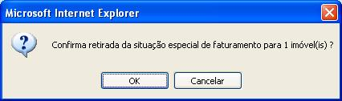

Botão
Descrição


Esta opção do sistema conclui o processo de retirada da situação especial de faturamento de um imóvel, ou de um conjunto de imóveis.
Preenchimento dos Campos:|
Botão |
Descrição |
|---|---|
|
Este botão, ao ser acionado, fará com que o sistema volte para a tela anterior. |
|
Utilize este botão para solicitar ao sistema a efetivação da remoção da situação especial de faturamento para o(s) imóvel(eis) selecionados. |
Tela de Sucesso:
A tela de sucesso
será apresentada
após clicar no botão , e
você confirmar a operação, clicando no botão "OK", do diálogo
que é apresentado pelo sistema, solicitando a
confirmação da retirada da
situação especial de faturamento para os
imóveis selecionados. Veja, abaixo, um exemplo do
diálogo de confirmação:

O sistema apresentará a mensagem abaixo após a confirmação da operação, e quando a retirada da situação especial de faturamento do(s) imóvel(eis) selecionado(s) tiver(em) sido realizada(s) com sucesso.
"<<quantidade de imóveis atualizados>> imóvel(is) retirados(s) da situação especial de faturamento com sucesso."
O sistema apresentará duas opções após a conclusão da operação de retirada da situação especial de faturamento. Escolha a opção desejada clicando em algum dos "hyperlinks" existentes na tela de sucesso: